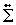
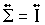
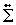
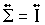

| LTPDA Toolbox™ | contents | |
|
The following sections gives an introduction to the generation of model noise with a given cross spectral density. Further details can be found in ref. [1].
We define the autocorrelation function (ACF) of a stationary multichannel process as:

If the multichannel process is L dimensional then the kth element of the ACF is a LxL matrix:
The ACF matrix is not hermitian but have the property that:
The cross-spectral density matrix (CSD) is defined as the fourier transform of the ACF:

the CSD matrix is hermitian.
A multichannel white noise process is defined as the process whose ACF satisfies:
therefore the cross-spectral matrix has constant terms as a function of the frequency:

The individual processes are each white noise processes with power spectral density (PSD) given by
 .
The cross-correlation between the processes is zero except at the same time instant
where they are correlated with a cross-correlation given by the off-diagonal elements of
.
A common assumption is

(identity matrix) that is equivalent to assume the white processes having unitary variance
and are completely uncorrelated being zero the off diagonal terms of the CSD matrix.
Further details can be found in [1 - 3].
.
The cross-correlation between the processes is zero except at the same time instant
where they are correlated with a cross-correlation given by the off-diagonal elements of
.
A common assumption is

(identity matrix) that is equivalent to assume the white processes having unitary variance
and are completely uncorrelated being zero the off diagonal terms of the CSD matrix.
Further details can be found in [1 - 3].
The problem of multichannel noise generation with a given cross-spectrum is formulated in frequency domain as follows:
 is a
multichannel digital filter that generating colored noise data with given cross-spectrum
is a
multichannel digital filter that generating colored noise data with given cross-spectrum
 starting from a set of mutually independent unitary variance with noise processes.
starting from a set of mutually independent unitary variance with noise processes.
After some mathematics it can be showed that the desired multichannel coloring filter can be written as:
where  and
and  are the eigenvectors and eigenvalues matrices of
matrix.
are the eigenvectors and eigenvalues matrices of
matrix.
LTPDA Toolbox provides two methods (mchNoisegenFilter and mchNoisegen) of the class matrix for the production of multichannel noise coloring filter and multichannel colored noise data series. Noise data are colored Gaussian distributed time series with given cross-spectral density matrix. Noise generation process is properly initialized in order to avoid starting transients on the data series. Details on frequency domain identification of noisegen filters and on the noise generation process can be found in ref. [1]. mchNoisegenFilter needs a model for the one-sided cross-spectral density or power spectral density if we are considering one-dimensional problems. mchNoisegen instead accepts as input the noise generating filter produced by mchNoisegenFilter. Details on accepted parameters can be found on the documentation pages of the two methods:
noisegen1D is a coloring tool allowing the generation of colored noise from withe noise with a given spectrum.
The function constructs a coloring filter through a fitting procedure to the model provided.
If no model is provided an error is prompted. The colored noise provided has one-sided psd
corresponding to the input model.
The function needs a model for the one-sided power spectral density of
the given process. Details on accepted parameters can be found on
the noisegen1D documentation page.
noisegen2D is a nose coloring tool allowing the generation
two data series with the given cross-spectral density from two starting
white and mutually uncorrelated data series.
Coloring filters are constructed by a fitting procedure to a model
for the corss-spectral density matrix provided.
In order to work with noisegen2D you must provide
a model (frequency series analysis objects) for the cross-spectral density
matrix of the process.
Details on accepted parameters can be found on
the noisegen2D documentation page.
| |
Franklin noise-generator | Parameteric models | |
©LTP Team